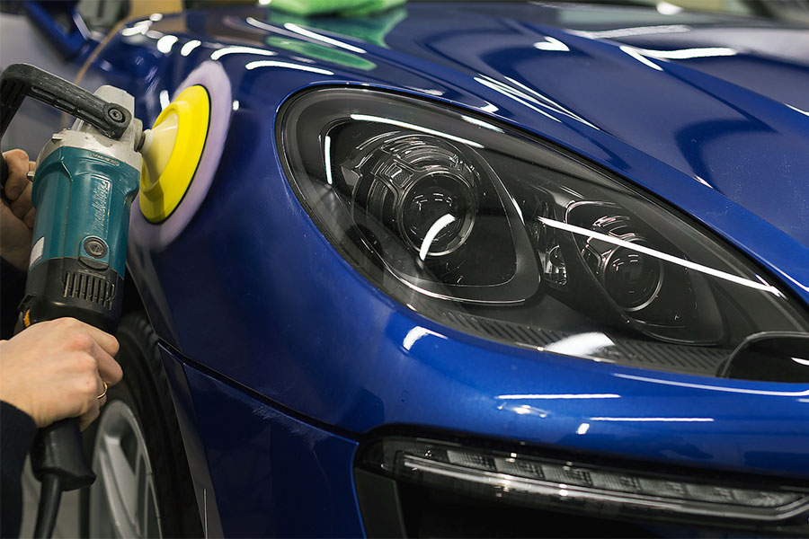
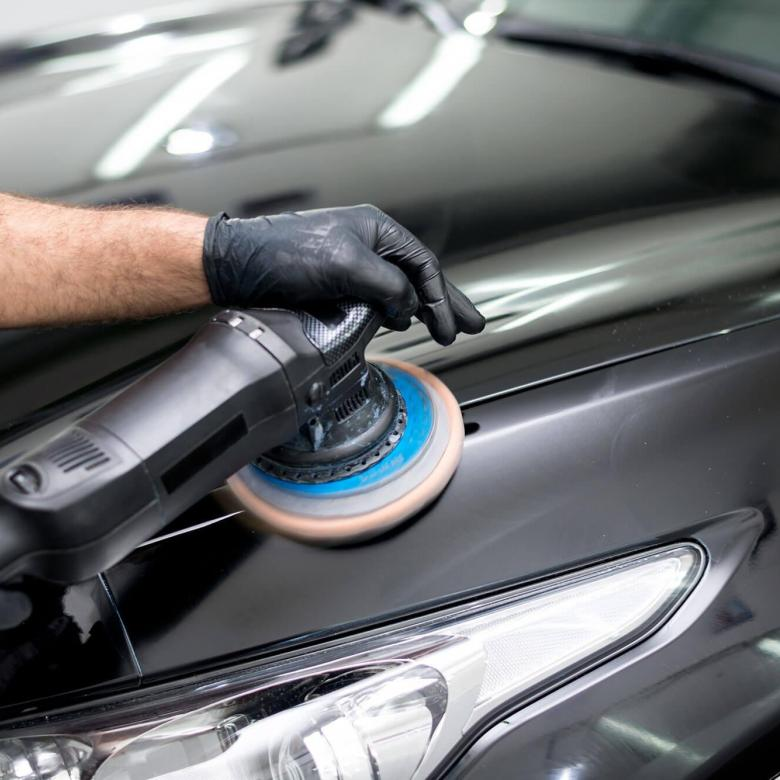
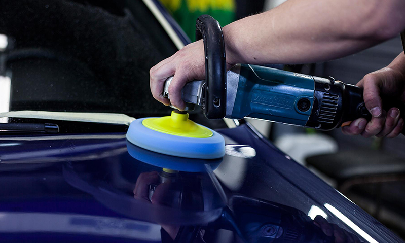

АВТО АПТЕКА
Кузовные работы
+7 (995) 110 32 12
avtoapteka02@mail.ru
avtoapteka02@mail.ru
9:00 - 18:00
Понедельник - Пятница
Понедельник - Пятница
ПОЛИРОВКА АВТОМОБИЛЯ В КРАСНОДАРЕ
В Авто Аптеке можно заказать полировку кузова автомобиля с глубоким проникновением. Исчезновение микроцарапин за 1 прием! Восстановление первозданного красивого вида и блеска вашего авто. Полировка кузова происходит с применением самых новых материалов и с использованием современных технологий. По этому после выполнения полировочных работ авто засверкает лучше чем новый. Надежно, качественно, профессионально!

Мы учитываем нюансы, которые неизбежно существуют для авто различных марок, например у корейцев и японцев лакокрасочное покрытие тоньше и мягче чем у немецких или американских коллег. Однако даже если кто-то и знает это, то мало применяет это знание на практике. Наши работы выполняются в таком случае безабразивными материалами, что позволяет не уменьшить толщину покрытия ни на один микрометр. В случае глубоких царапин, когда иного выхода нет, применяются абразивные материалы, что так же позволяет вернуть цвет и красоту. Следует знать, что при таком подходе происходит небольшое уменьшение изначального заводского покрытия автоэмали. Мы обязательно после снятия необходимого уровня покрываем обработанные кузовные элементы специальными восстанавливающими составами.
В КАКИХ СЛУЧАЯХ СТОИТ ВЫПОЛНЯТЬ ПОЛИРОВКУ?
Ее выполняют, когда есть следы от небольших веточек, следы от листьев, соскобов льда, следов животных и микроцарапин. Вообще со временем поверхность выгорает, мутнеет и теряет свой первоначальный вид. Автомобиль в таком случае смотрится неаккуратно и потрепано. Однако существуют способы восстановить внешнюю красоту транспортному средству и придать дополнительную защиту ЛКП от разрушающих внешних воздействий, которые неизбежно возникают в процессе эксплуатации автомобиля.
Процесс полировки кузова можно разбить на несколько частей:
8 ПРИЧИН СДЕЛАТЬ ПОЛИРОВКУ АВТОМОБИЛЯ
В СЕРВИСЕ АВТО АПТЕКА

АВТО АПТЕКА
Кузовные работы
Мы знаем, что честность и прозрачность в сочетании с надежным и дружелюбным обслуживанием клиентов - это то, что действительно укрепляет доверие клиентов.
Контактная информация